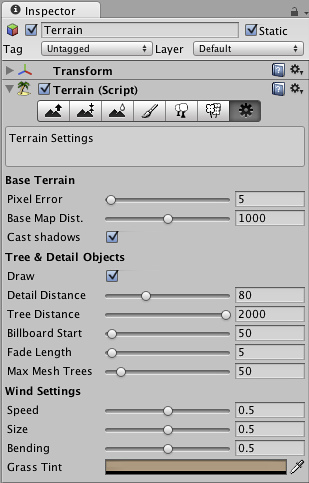

Other Settings
There are a number of options under the button  in the Terrain Inspector.
in the Terrain Inspector.

All additional Terrain Settings
All additional Terrain Settings
Base Terrain
- Pixel Error controls the amount of allowable errors in the display of Terrain Geometry. This is essentially a geometry LOD setting; the higher the value, the less dense terrain geometry will be.
- Base Map Dist.: The distance that Terrain Textures will be displayed in high-resolution. After this distance, a low-resolution composited texture will be displayed.
- Cast Shadows: Should terrain cast shadows?
Material slot allows assigning a custom material for the terrain. The material should be using a shader that is capable of rendering terrain, for example Nature/Terrain/Diffuse (this shader is used if no material is assigned) or Nature/Terrain/Bumped Specular.
Tree & Detail Settings
- Draw: if enabled, all trees, grass, and detail meshes will be drawn.
- Detail Distance distance from the camera that details will stop being displayed.
- Tree Distance: distance from the camera that trees will stop being displayed. The higher this is, the further-distance trees can be seen.
- Billboard Start: distance from the camera that trees will start appearing as Billboards instead of Meshes.
- Fade Length: total distance delta that trees will use to transition from Billboard orientation to Mesh orientation.
- Max Mesh Trees: total number of allowed mesh trees to be capped in the Terrain.
Wind Settings
- Speed: the speed that wind blows through grass.
- Size: the areas of grass that are affected by wind all at once.
- Bending: amount that grass will bend due to wind.
- Grass Tint: overall tint amount for all Grass and Detail Meshes.
Page last updated: 2012-11-16